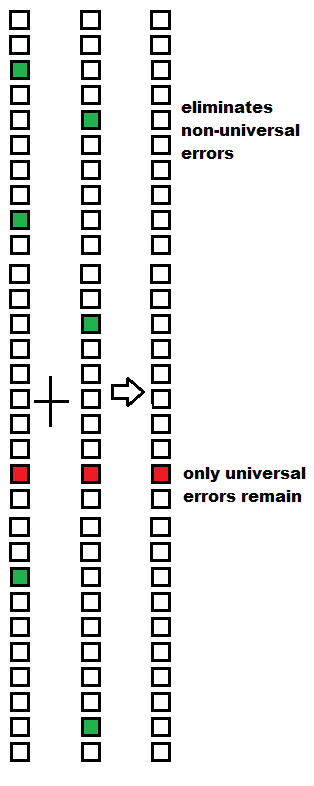

You can also use the text to create your own e-book, in epub or mobi format.
Doing diffs with other transcriptions lets a proof-reader stand on the shoulders of others. That is the main point of this project.
Result #2: a list of errors/issues with the 1908-LCP-4th text, gathered from critical editions and my own proof-reading.
Result #3: the above list of errors has been applied to the uncorrected text, and is available here as a separate transcription. For most people, this is the most useful item in this project. A raw listing of the actual differences between the uncorrected and corrected versions can be viewed here.
Result #4: I have detected issues in other transcriptions:
Result #5: My transcription was accepted by Project Gutenberg, and published to their site on 2021-01-21. My transcription is now their second transcription (in English) of Anne of Green Gables. The first one has about 1,000 differences with the first edition of the novel. Many of those differences are caused by modernization and Americanization. The remaining differences are still numerous, and show significant, non-trivial changes to the text. My transcription, on the other hand, is much closer to the text of the first edition.
The main outputs of this project are on these branches:
From what I can see, the groups on the web that provide transcriptions don't talk to each other. They don't compare their transcriptions to the output of other similar groups.
The idea of this project is simply that doing diffs on independent transcriptions is an easy way to find a large number of errors, and significantly increase accuracy.
Some ad hoc lingo, for the nonce:

First I do a full proof-read of my transcription. 
Then, for each of the other transcriptions A, B, C:
The UTE(A, B, C, me) errors are more difficult to deal with. They can't be found by doing diffs, since they are present in all of the input transcriptions. Can they be detected using other means? In a few isolated cases, yes. If a policy of Americanization or modernization has been applied to all transcriptions, then that policy can be reversed, in whole or in part, by writing a simple find-replace script to change the transcription. But those are special cases (marked as 'known', in the above diagram).
At the end of the process described above, the transcription errors in my output equal the universal transcription errors across all of the inputs. This expresses the benefit of doing diffs.
Somewhat surprisingly, it's beneficial to even use different editions of the source text. For example, this project uses a transcription of a 1946 edition of Anne of Green Gables to produce a transcription of the 1908 edition (4th impression). This is beneficial because it ensures more independence of transcriptions. It's not a problem, because the real textual diffs between 1908 and 1946 are small, and are detected and accounted for by the work flow described above.
See also the bibliography of Montgomery's works, published in 1986 by the University of Waterloo Library (Russell, Russell, and Wilmshurst). Archive.org requires login for this book, but the cost is free.
The main early editions, from which others are derived, are marked in bold below:
| Label | Publisher | Description |
|---|---|---|
| 1908-LCP | L. C. Page | First edition, April. Boston, USA. Many subsequent impressions, with error corrections. |
| 1908-PIT | Sir Isaac Pitnam | London, UK. Plates from Page. First British edition. |
| 1914-G&D | Grosset and Dunlap | New York, USA. Lower quality paper and printing, cheaper book. Plates from Page. |
| 1916-LCP | L. C. Page | 40th impression, gifted from author to her son. Montgomery made no manual corrections to it. Best version of LMM-approved text? |
| 1920-LCP | L. C. Page | Movie edition, re-issued to coincide with a film release. Uses 1908 plates. |
| 1924-Cornstalk | Cornstalk | Sydney, Australia. |
| 1925-LCP | L. C. Page | New plates. Boston, USA. Fairly close to the 1908 edition. |
| 1925-GGH | George G. Harrap | New plates, distinct from Page's new plates. London, UK. Not as close to the 1908 edition. Changes to a British style. Corrects some errors of Page. Many diffs with Page. |
| 1942-RP | Ryerson | First Canadian edition. Toronto, Canada. Uses the 1925-LCP plates (according to 2007-NCE). |
| 1965-RP | Ryerson | Toronto, Canada. Illustrated. |
| 1997-OUP | Oxford University | New York, USA. Annotated edition. Not close to 1908. Draws from holograph (manuscript) and 1925 GGH. Bit unusual. |
| 2004-BP | Broadview Press | Peterborough, Canada. Close to 1908. |
| 2007-NCE | W. W. Norton | New York, USA. Critical edition. Very close to 1908. |
| 2017-PC | Penguin Classics | New York, USA. Close to 1908. |
| 2019-NM | Nimbus | Transcription of the manuscript. Halifax, Canada. Additions, deletions, and changes. |
| Step | Description | Lost? |
|---|---|---|
| Manuscript (holograph) | Hand-written by Montgomery. Preserved at the Confederation Centre of the Arts. | No |
| Typescript | Typed by Montgomery, and sent to the publisher. | Yes |
| Uncorrected proof(s) | Produced by the publisher from plates, for correction by the author. | Yes |
| Corrected proof(s) | With author's corrections. | Yes |
| Published book | As sold to the public. | No |
Interesting remarks from the critical edition of Rubio and Waterston:
| Date | Publisher | Description |
|---|---|---|
| 1908-04 | L. C. Page | 1st impression. (I didn't know about this scan when I started the project.) |
| 1908-09 | L. C. Page | 4th impression. Some pages are missing small parts of the text (on the sides). |
| 1909-08 | L. C. Page | 11th impression. |
| 1915-02 | Grosset and Dunlap | 39th impression. Based on Page's plates. |
| 1926-02 | L. C. Page | 59th impression, presumably from the 1925-LCP plates. |
| 1930-10 | George G. Harrap | From the 1925-GGH plates. Low quality scan. Problems near the spine. |
| 1933 | Angus & Robertson | Sydney, Australia. Based on Page's plates. |
| 1946-11 | Ryerson Press | Based on their 1942 edition. Uses the 1925-LCP plates. |
There are plans to make images of the manuscript available in 2022. Montgomery's handwriting is hard to read. Most would prefer the book edited by C. S. Collins.
It would be very unusual if two transcriptions of a long novel were absolutely identical.
Various stats can be used to quantify how different two transcriptions are. For example, here are some stats output by git's diff command. They show the distance between the 1908-LCP-4th branch and this project's initial snapshots of other transcriptions. The smaller the number, the more similar they are.
| Branch | Copy-text | Chapters Differ | + | - |
|---|---|---|---|---|
| 1908-LCP-4th | 1908-4th | 0/38 | 0+ | 0- |
| 1908-LCP-4th-corrected | 1908-4th | 16/38 | 25+ | 25- |
| DIG-WIK-1908-11th | 1908-11th | 38/38 | 175+ | 184- |
| DIG-DPC-2008-05 | 1946-RP | 38/38 | 175+ | 182- |
| DIG-GUT-0000 | Unknown | 38/38 | 972+ | 977- |
Of the three transcriptions that come from other parties, the Project Gutenberg 2016 transcription is the only one that has modernized and Americanized the spelling. That contributes to the larger number for that transcription.
The 1946-RP text uses the 1925-LCP plates, so the underlying copy-text is more distant from 1908. At the same time, this project found fewer transcription errors for DPC than for Wikisource.
Here's the listing for updated snapshots of other transcriptions as of 2021-01-07, reflecting recent changes to the transcriptions.
| Branch | Copy-Text | Chapters Differ | + | - | Summary | Details |
|---|---|---|---|---|---|---|
| 1908-LCP-4th | 1908-4th | 0/38 | 0+ | 0- | n/a | n/a |
| 1908-LCP-4th-corrected | 1908-4th | 16/38 | 25+ | 25- | summary | diffs |
| DIG-WIK-1908-11th-B | 1908-11th | 17/38 | 29+ | 28- | summary | diffs |
| DIG-DPC-2008-05-B | 1946-RP | 33/38 | 107+ | 108- | summary | diffs |
| DIG-GUT-0000 | Unknown | 38/38 | 993+ | 1003- | summary | diffs |
Links to the detailed diffs require a lot of horizontal scrolling. It's recommended to download the file from github.
You can see that my transcription is now quite close to those of Wikisource and Distributed Proofreaders Canada. The DPC transcription is further away than Wikisource because its underlying copy-text is further away.
| 1908-LCP-4th | |||||||||||||||||||||||||||||||||||||||||||||||||||
|---|---|---|---|---|---|---|---|---|---|---|---|---|---|---|---|---|---|---|---|---|---|---|---|---|---|---|---|---|---|---|---|---|---|---|---|---|---|---|---|---|---|---|---|---|---|---|---|---|---|---|---|
| Ch. 01 | JO(4) | ||||||||||||||||||||||||||||||||||||||||||||||||||
| Ch. 02 | JO(3) | ||||||||||||||||||||||||||||||||||||||||||||||||||
| Ch. 03 | JO(5) | ||||||||||||||||||||||||||||||||||||||||||||||||||
| Ch. 04 | JO(4) | ||||||||||||||||||||||||||||||||||||||||||||||||||
| Ch. 05 | JO(2) | ||||||||||||||||||||||||||||||||||||||||||||||||||
| Ch. 06 | JO(4) | ||||||||||||||||||||||||||||||||||||||||||||||||||
| Ch. 07 | JO(0) | ||||||||||||||||||||||||||||||||||||||||||||||||||
| Ch. 08 | JO(0) | ||||||||||||||||||||||||||||||||||||||||||||||||||
| Ch. 09 | JO(3) | ||||||||||||||||||||||||||||||||||||||||||||||||||
| Ch. 10 | JO(10) | ||||||||||||||||||||||||||||||||||||||||||||||||||
| Ch. 11 | JO(3) | ||||||||||||||||||||||||||||||||||||||||||||||||||
| Ch. 12 | JO(2) | ||||||||||||||||||||||||||||||||||||||||||||||||||
| Ch. 13 | JO(1) | ||||||||||||||||||||||||||||||||||||||||||||||||||
| Ch. 14 | JO(5)
| Ch. 15 | JO(7)
| Ch. 16 | JO(5)
| Ch. 17 | JO(3)
| Ch. 18 | JO(4)
| Ch. 19 | JO(2)
| Ch. 20 | JO(4)
| Ch. 21 | JO(6)
| Ch. 22 | JO(4)
| Ch. 23 | JO(4)
| Ch. 24 | JO(2)
| Ch. 25 | JO(4)
| Ch. 26 | JO(1)
| Ch. 27 | JO(2)
| Ch. 28 | JO(4)
| Ch. 29 | JO(7)
| Ch. 30 | JO(7)
| Ch. 31 | JO(4)
| Ch. 32 | JO(5)
| Ch. 33 | JO(2)
| Ch. 34 | JO(9)
| Ch. 35 | JO(1)
| Ch. 36 | JO(4)
| Ch. 37 | JO(7)
| Ch. 38 | JO(3)
| Total | 147
| |
Proof-readers/Editors:
| Initials | Name |
|---|---|
| JO | John O'Hanley |
I have divided these issues into two kinds:
Rachael Lynde
[Table of Contents, Ch. 1 and Ch. 9].
Change to match how the name is spelled throughout the body of the text: 'Rachel'.
people called “Rachel Lynde’s husband—was sowing
[Ch. 01, p2-3].
The right-quote is missing. The text is split across two pages in this case.
2007-NCE says this was corrected between the 5th impression and the 12th impression.
The 11th impression shows a change, but it's still in error, since there are two opening quotes.
suggested getting a Barnado boy.
[Ch. 01, p8].
Misspelled. Should be 'Barnardo', as in MS.
According to 2007-NCE: only 1924-Cornstalk has 'Barnardo'; both 1925-LCP and 1927-GGH use 'Home boy' instead.
A merchant in Hopeton last winter
[Ch. 02 , p19].
Misspelled. Should be 'Hopetown'. Occurs in 3 places in the novel: Hopetown, Hopeton, Hopeton. MS always has Hopetown.
The second occurrence:
a soul that had been wondering afar
[Ch. 02, p26].
Change to 'wandering'. Match the MS.
‘The Seasons’ by James Thompson.
[Ch. 05, p58]
Change to 'Thomson'. This is a real author, whose name has been misspelled.
* infinite, eternal and unchangeable, in His being,
[Ch. 07, p71]
The comma after unchangeable should really be after eternal.
That will match the punctuation of the original text.
The Annotated Anne of Green Gables points to this misquoted catechism as the source of the quote (page 32).
anl then studied diligently
[Ch. 8, p82]
Change to 'and'.
This error is present in the 1st impression, and absent in the 4th impression.
This is the only difference that I'm currently aware of between the 1st and 4th impressions.
echo lived there
[Ch. 08, p84]
The period is missing after 'there'. Seems to be a defect in the printing, not in the image.
The period is present but weak in the 11th impression, and
definitely present in 39th impression.
cooky to eat with it along in the afternoon
[Ch. 16, p170]
Change to 'along with it'. Match the MS. Seems to be a clear grammatical error. Annotated makes this correction.
* about its being all right
[Ch. 16, p180]
Change 'its' to 'it'.
MS has 'its' as well.
Seems like an error in grammar.
There's nothing possessive here.
The text is in the narrator's voice, and doesn't seem to be colloquial.
In chapter 14 there's a second occurrence of about its, but in Anne's voice, not the narrator's voice.
to forget, said Anne
[Ch. 16, p169]
Missing end quote.
but after awhile
[Ch. 19, p223]
Change to 'a while'.
The noun phrase 'a while' has two words. The adverb form 'awhile' is a single word.
Chapter 16 uses 'awhile' correctly.
This issue isn't noted in any critical edition that I've seen.
But it is corrected in the Penguin/Puffin edition of 2008 (which may in turn be derived from some earlier edition.)
Other occurrences that should be changed to a while (two words):
Bitterly did she resent the license
[Ch. 20, p231]
Misspelled, should be 'repent'. 2007-NCE says this error was corrected in the 5th impression.
it is much as he did
[Ch. 25, p272]
Missing the word 'as'. Make it read 'it is as much as he did'. This will match the MS, and later editions.
* Let you and I have
[Ch. 26, p293]
Change to 'Let’s'.
in Death Not Divided
[Ch. 26, p290].
Capitalize to 'In'. Match the MS. Annotated makes this change.
Hills peeped o’er hill, and Alps
[Ch. 31, p353]
Change to 'hills'. Match the MS, and the original text of the quote of Alexander Pope.
Spurgeon stayed resolutely away
[Ch. 32, p365]
Missing period after 'away'.
yellowish-brown wincey
[Ch. 34 , p384]
Change to agree with chapter 2, which describes the same dress as 'yellowish grey wincey' (no hyphen).
Josiah Allen’s wife
[Ch. 38, p424]
Capitalize to 'Wife'.
This will correctly match the name of the referenced fictional character.
told her Thomas that night.
[Ch. 38, p426]
Period should be a comma or a colon, 'night,' or 'night:'.
MS has a comma.
In chapter 15, some paragraphs end in a comma (unusual), just before a character begins speaking.
* I haven't seen this issue mentioned elsewhere.
Our spirits can comune.
[Ch. 17, p190]
The correct spelling is commune, but this probably shouldn't be corrected, since Anne misspells several words in her letter: comune, busum, improoving.
Annotated silently changes the spelling to commune, but leaves the spelling of the other two words.
In this respect, they are matching the MS.
It seems that 1925-GGH changes to 'commune' (example from 1930).
It seems that 1925-LCP also changes to 'commune' (example from 1933.)
I disagree with these later editions.
I think the intent of the author was to intentionally misspell three words in the letter, not two, and that the spelling of the
first edition should be preserved.
pail the barge
[Ch. 28, p310]
Change to 'pall'. Match the MS.
2007-NCE says that this error in the first impression was actually corrected in the 4th impression, so it's not visible in the above link.
But wait! This 1st impression
does not have the error. What's going on?
Coincidentally, I found a similar error when reading the novel Germinie Lacerteux. It has this mistake, where the French word elle is poorly printed, and appears as eile instead. Such a misprint would change pall to pail.
And as for the risk...
[Ch. 01, p10].
Risk...risks...risks: should all three instances of 'risk' be either singular or plural? Colloquial speech.
It is a kind of pretty place.
[Ch. 02, p26].
Change to 'kind of a pretty place'. Match the MS.
That’s Barry’s pond
[Ch. 02, p28].
Capitalize to Pond. This place name occurs elsewhere in a number of places in the text.
Might change 'Shore Road' in the same way.
Call you Cordelia!
[Ch. 03, p35].
Change the exclamation mark to a question mark.
Why is she yelling? The Annotated Anne of Green Gables makes this change, but they don't note
it as a change.
said Marilla sharply, eying her
[Ch. 03, p37].
Change to 'eyeing'. The UK spelling 'eying' just looks odd.
four dark, low-turned posts
[Ch. 03, p39].
Change to 'four dark, low, turned posts'. Match the MS.
Suppose she wasn’t really going to stay here!
[Ch. 04, p43].
Seems completely backward from the intended sense.
Why express enthusiasm for the undesired alternative?
Move the exclamation point to the next sentence? Italicize 'was'?
The author uses an exclamation point here not for expressing a positive feeling, but for expressing a strong feeling.
Chapter 31 has a similar sentence: 'Suppose they did not pass!'.
held his tongue,—but this at least was natural,—so that
[Ch. 04, p47].
The commas are superfluous, since the em dashes already do the work.
beating a retreat down cellar after potatoes.
[Ch. 04, p50].
Change to 'down to the cellar'?
Strange wording, similar to 'down-stairs', but with two words.
saw that aggravating Matthew
[Ch. 04 , p52].
Ambiguous, poorly worded; what 'that' means is clear only after re-reading the sentence.
Saw that 'she was' aggravating?
Mrs. Peter has a large family
[Ch. 06, p63].
The woman is named in 3 ways, in this order: 'Mrs. Peter Blewett', 'Mrs. Peter', and 'Mrs. Blewett'.
Could her first name really have been Peter? Or is that her husband's first name?
It seems entirely intentional on Montgomery's part.
'Mrs. Peter' reminds me of 'Mrs. Rachel' for Mrs. Rachel Lynde.
Chapter 16 has 'Mr. and Mrs. Chester Ross', 'Mrs. Chester Ross'.
picking them— I wouldn’t want
[Ch. 08, p86]
Extra space after the em dash; still present in the 39th impression.
Is this just an artifact of text justification?
at touch of that thin little hand
[Ch. 10, p107]
Change to 'the touch'. Annotated does this.
as plain as waist and skirt and tight as sleeves
[Ch.11 , p109].
Add a comma somewhere? After 'skirt'?
Nothing daunted Anne proceeded onward
[Ch. 11, p112].
Add a comma after 'daunted'? See reference.
nor ‘Midian,’ either, but it sounds
[Ch.11, p115].
Remove the comma after Midian? Not in MS.
Anne rose to her feet, with clasped hands, the tears
[Ch. 12, p118].
Remove the comma?
in from the yard, eyes shining,
[Ch. 13, p126].
Printing defect. The comma is barely visible; make sure it's there.
between our farm and Mr. Barry’s.
[Ch. 13, p129].
Should the statement be a question?
Diana whispered to Anne,
[Ch. 15, p154].
Unusual to have a paragraph end with a comma.
in a piercing whisper,
[Ch. 15, p156].
Unusual to have a paragraph end with a comma.
she had been called “carrots.”
[Ch. 15, p157].
Capitalize 'Carrots'.
a crow and being called carrots
[Ch. 15, p159].
Capitalize 'Carrots'.
acksually never seen anything like it
[Ch. 15, p161].
Change to 'ackshually'. Restore MS. Annotated does this.
and she ought to know something about it
[Ch. 15, p164].
Change to 'so'. Restore MS. Annotated does this.
it’s beginning to work.
[Ch. 16, p170]
Change 'work' to 'go' (as in go bad). Match the MS, and 1925-GGH.
I've never heard an Islander use 'work' in this way.
In the Cdn Oxford Dict., one definition of 'to work' is 'to ferment'.
Is this usage of 'go' in the Pratt/Burke Dictionary?
the second shelf of the room pantry
[Ch. 16, p173]
Change to 'sitting-room'.
Annotated does this, but MS has 'room' only.
said Diana stanchly,
[Ch. 17, p185].
Change 'stanchly' to 'staunchly'. Do the same in chapter 33.
Ella May Macpherson gave her
[Ch. 17, p187].
Change 'Macpherson' to 'MacPherson', to match other occurrences in the book. The MS actually has 'McPherson' at this place.
And Gil— I mean some
[Ch. 17, p192]
Extra space after the em dash.
Is this just an artifact of text justification?
Similar to an issue in chapter 8 (above).
There’s another, not a sister,
[Ch. 19, p215].
The original text has no italics for 'not'.
Doctor Spencer would go too,
[Ch. 18, p198].
Reads better with a period. MS has a period, so does Annotated.
the frogs were singing silverly sweet
[Ch. 20, p226].
Change to 'silvery', as in the MS, and in 1925-GGH.
a minister’s family to tea.
[Ch. 21, p240].
Change 'family' to 'wife', as in MS.
It was stated previously in the text that the couple is childless.
Annotated does this, and I agree.
but steadily ate away at it.
[Ch. 21, p244].
Change to 'ate steadily'.
Restore to MS.
Annotated does this too.
girls said, “Oh!”
[Ch. 23, p256].
Remove the comma after 'said'. MS has the comma.
blame it on anybody I would
[Ch. 23, p260].
Change to 'anybody else'.
Match the MS, and Annotated.
Remained only Mrs. Lynde
[Ch. 25, p276].
Change to 'There remained only'.
Have you something particular in mind?
[Ch. 25, p276].
Change to 'anything'.
Match the MS.
Annotated has 'anything in particular in mind'.
like them made in the new way.
[Ch. 25, p277].
Change to 'made'.
Match the MS, and Annotated.
Moody Spurgeon was “licked;”
[Ch. 26, p287].
Should the semi-colon be outside the quotation marks? Match the MS.
to light her down cellar
[Ch. 27, p300]
Change to 'light her way'. Is this an error, or intended?
Gilbert had called her “carrots”
[Ch. 28, p315]
Capitalize 'Carrots'.
took us up to the grand stand
[Ch. 29, p326]
Change to 'grandstand', one word. Match MS. Match the Cdn Oxford Dict.
the last moonlight night
[Ch. 30, p334]
Change to 'moonlit'?
build anything really worth while
[Ch. 30, p335]
Change to 'worthwhile'?
Both forms exist, according to the Cdn Oxford Dict.
'Worth while' also occurs in chapter 35, on page 396.
tucked ‘Ben-Hur’ between the desk
[Ch. 30, p335]
'Ben-Hur' is spelled without the hyphen everywhere else. Make consistent.
studying for the entrance.
[Ch. 30, p338]
Two spellings seen in 1908 and the MS, 'entrance' and 'Entrance'. Make consistent.
she did it, so successfully
[Ch. 30, p343]
Remove the comma. Match the MS.
When Marilla was not at Aid meeting
[Ch. 30, p346]
Change to 'the Aid meeting'.
the Spencervale doctor and a heart
[Ch. 31, p349]
Add a comma after 'doctor'?
adorned to the queen’s taste.
[Ch. 33, p372]
Capitalize to 'Queen’s'?
The time frame of the novel is never precisely stated, as far as I know.
Does this sentence imply that the action is taking place in the Victorian era?
Queen Victoria died in 1901, and was succeeded by a male monarch.
to take on so
[Ch. 34, p386]
Perhaps put in quotation marks, “take on”, to match the MS.
teacher’s provincial license, Class First,
[Ch. 34, p391]
Perhaps change to 'First Class', which is used elsewhere in the text. The MS has 'Class First'.
handsome young lady, now
[Ch. 35, p393]
Put the comma after 'now', not 'lady'. Match the MS.
professor Tremaine
[Ch. 35, p398]
Capitalize to 'Professor'. Match the MS, and common practice.
brought from the office
[Ch. 37, p409]
Change to 'post-office'. The MS has 'brought in from the office'.
“Yes”—briefly.
[Ch. 37, p416]
Bizarre. Meaning that she responds curtly to the question?
to stay home and teach there
[Ch. 38, p423]
Add a comma after 'teach'. Without a comma, 'there' erroneously refers to Avonlea, on first reading.
General speed bump issue: there are many times when the speech of the characters seems slightly too formal for rural Islanders. For example, contractions such as it is versus it's.
In chapter 5:
General speed bump issue: the persistent use of quotations to refer to items: titles, idiom, and so on. I would prefer italics.
General speed bump issue: the spelling isn't completely consistent. Here are some examples, with the number of occurrences of each variant:
The following applies to early editions only. See 2007-NCE and Annotated for more info.
There is a sentence in chapter 16 which is distinct between three main early editions. It happens when Anne discovers that Diana got drunk on 'raspberry cordial':
1908-LCP and 1925-LCP can also be distinguished using these characteristics:
1925-LCP has these characteristic errors that identify it:
1925-GGH has these characteristics that help identify it:
I haven't included the (2016) Project Gutenberg transcription here, because the number of issues for them is too large!
1946 Ryerson (7+3) - found using diffs + DPC notes about misspellings
This edition is based on the 1925-LCP plates (see 2007-NCE).
| Ch | Paragraph | Is | Should Be | Description |
|---|---|---|---|---|
| 1 | Marilla was a tall | hairpins stuck agressively | hairpins stuck aggressively | misspelled |
| 14 | That night a thoroughly | beautification | beatification | wrong word; compare LCP 1908, 4th impr. |
| 17 | The girls were not | already to take a bite | all ready to take a bite | should be 'all ready'; see LCP 1908, 4th impr, and the MS. |
| 17 | The girls were not | red hot coal | red-hot coal | should be 'red-hot'; see LCP 1908, 4th impr, and the Cdn Oxford Dictionary. |
| 17 | The girls were not | big lucious “strawberry apple.” | big luscious “strawberry apple.” | misspelled |
| 19 | For Anne the real | positive ecstacy | positive ecstasy | misspelled; should be 'ecstasy'; see LCP 1908, 4th impr, and the Cdn Oxford Dictionary |
| 19 | “I knew it!” | The Barry’s must feel | The Barrys must feel | see LCP 1908, 4th impr |
| 19 | “Yes,” answered Diana | dancing with rage. Anne. | dancing with rage, Anne. | misprint; period should be a comma. see LCP 1908, 4th impr |
| 32 | “I just guess she | we’ll all proud of you. | we’re all proud of you. | misspelled |
| 35 | Ruby Gillis was the handsomest | preeminence | pre-eminence | match the MS, and the Canadian Oxford Dictionary |
2007 Norton (9) - found in passing; all involve hyphens
| Ch | Paragraph | Is | Should Be | Description | |||||||||||||||
|---|---|---|---|---|---|---|---|---|---|---|---|---|---|---|---|---|---|---|---|
| 02 | They had driven | tiptoe-ing | tiptoeing | the hyphen is present in 1908, but only because of a line-break; occurrences | |||||||||||||||
| 04 | Anne washed the dishes | dinner-time | dinnertime | the hyphen is present in 1908, but only because of a line-break; MS: 'dinnertime' (twice), which agrees w/ Cdn Oxford Dict.; chapt. 15: 'dinner time' | |||||||||||||||
| 08 | Anne set the card | dinner-table | dinner table | the hyphen is present in 1908, but only because of a line-break; MS and Chapter 20 have 'dinner table'; occurrences | |||||||||||||||
| 08 | Anne blew a couple | fingertips | finger-tips | ambiguity because of a line break; MS has hyphen, but Cdn Oxford dict doesn't; occurrences | |||||||||||||||
| 17 | The girls | redhot coal | red-hot coal | use a hyphen; occurrences | |||||||||||||||
| 20 | One June evening | be-starred | bestarred | the hyphen is present in 1908, but only because of a line-break; occurrences; MS agrees with the Collins dict.
| 21 | “I don’t think I was | black-board | blackboard | the hyphen is present in 1908, but only because of a line-break; occurrences
| 30 | Studies palled just | by-ways | byways | in 1908 the hyphen coincides with a line-break; occurrences; The MS is inconsistent.
| 35 | Ruby Gillis was the handsomest | preeminence | pre-eminence | in 1908 the hyphen coincides with a line-break; match the MS, and the Cdn Oxford Dict; occurrences
| |
Distributed Proofreaders Canada (33) - found using diffs
| Ch | Paragraph | Is | Should Be | Description | Fixed |
|---|---|---|---|---|---|
| 01 | There are plenty | Gulf of St Lawrence | Gulf of St. Lawrence | the period for the abbreviation 'St.' | y |
| 03 | “Oh, it makes | an e I shall | an _e_ I shall | missing the italics | y |
| 04 | “I never in all | _looks_? | _looks?_ | include the question mark | N |
| 05 | “Do you know,” said | Redheaded | Red-headed | the line break is misleading | y |
| 08 | “There—I know this prayer | sound so luxurious | sound _so_ luxurious | the emphasis is missing | y |
| 08 | “There—I know this prayer | make _that_, seem | make _that_ seem | extra comma | y |
| 08 | Anne blew a couple | fingertips | finger-tips | the line break is misleading; the MS has a hyphen, but the modern Cdn Oxford Dict. doesn't | y |
| 10 | "Oh, Mrs. Lynde!" | to her feet "You | to her feet. "You | missing period; OCR confused | y |
| 10 | “How can I be vain | took | look | OCR is confused by a printing defect | y |
| 11 | Anne was standing | preceeding | preceding | not spelled correctly in the copy-text (they like to correct such errors directly) | y |
| 13 | “Oh, Marilla | ice cream | ice-cream | the hyphenation is inconsistent in the copy-text; it's usually ice-cream | y |
| 13 | “Oh, Marilla | _ice cream_! | _ice-cream!_ | include the exclamation point in the italics | y |
| 15 | The way Anne and Diana | was a pretty one | was a pretty one | add italics | y |
| 15 | “I think your Gilbert | Gilbert Blythe is handsome | Gilbert Blythe is handsome | add italics | y |
| 16 | “I should think | ran to the pantry, | ran to the pantry. | comma should be a period; the copy-text has a printing error here | y |
| 17 | The Cæsar’s pageant | The Caesar’s pageant | The Cæsar’s pageant | use a ligature æ (as elsewhere) | N |
| 18 | “Well, anyway, | The taffy wasn’t very good. | The taffy wasn’t very good, | period should be a comma | y |
| 20 | “I’m so sorry for people | not to miss them | not to miss them | missing italics for not | y |
| 21 | “I don’t think I was | spelled my name without an e | spelled my name without an e | missing italics for e | y |
| 24 | “Well, when you can combine | Faith, Hope, and Charity, | Faith, Hope, and Charity. | comma should be a period | y |
| 23 | “And that is just why | it is all my own fault | it is all my own fault | missing italics for is | y |
| 25 | “Merry Christmas, Marilla! | They’re not green | They’re not green | missing italics for not | y |
| 26 | “Ruby Gillis thinks of nothing | noticed that | noticed that. | missing period | y |
| 27 | “Anne Shirley, what have | Why, it’s _green_! | Why, it’s _green!_ | include the exclamation point in the italics | N |
| 29 | “I’m not going to think about it | But it is such | But it _is_ such | add italics for 'is' | y |
| 30 | “Oh, how can you call | but it was agonising | but it was _agonizing_ | not the same spelling as the copy-text | y |
| 30 | “I’m not even going to | until I know every proposition | until I know every proposition | remove the italics on 'I' | y |
| 30 | “Matthew had a bad spell | avoid excitement That’s | avoid excitement. That’s | missing period | y |
| 31 | “I don’t know—I don’t want | fore-finger | forefinger | the hyphen is from the line break; the MS has no hyphen, and neither has the Cdn Oxford Dict. | y |
| 33 | “She looks neat | to Matthew, nowadays. | to Matthew nowadays. | remove the comma | y |
| 36 | For a moment Anne | Matthew would be sorry,—he | Matthew would be sorry—he | remove the comma; seems to be a defect in the printing | y |
| 37 | “We’ve got each other | “We’ve got each other. Anne. | “We’ve got each other, Anne. | period should be a comma | y |
| 38 | But crispness was no | Thomas that night. | Thomas that night, | period should be a comma | y |
Wikisource (113) - found using diffs
Fixes have been applied to all items except one.
The items marked as y1 involve whitespace of some kind. Common causes:
Items marked as y2 were corrected during a second cycle of corrections.
Items marked as exp have an issue with the text export.
| Ch | Paragraph | Is | Should Be | Description | Fixed |
|---|---|---|---|---|---|
| 01 | “Well, we’re not | I’d never dream | “I’d never dream | missing opening quotation mark | y |
| 01 | “Well, we’re not | It does really | “It does really | missing opening quotation mark | y |
| 01 | “Well, we’re not | so he’s he ever | so be’s he ever | possible OCR error | y |
| 02 | He walked jauntily | gently own the | gently down the | missing the letter 'd' | y |
| 02 | The “Avenue,” | the air as full | the air was full | missing the letter 'w' | y |
| 03 | “Oh, I’m not ashamed | Anne spelled with an _e_ | Anne spelled with an _e_. | missing period | y |
| 03 | “I could hire | and she'd be company | “and she’d be company | missing first quotation mark | y |
| 04 | Anne washed the | dinner-time | dinnertime | the hyphen is present only because of a line-break; MS: 'dinnertime' (twice), which agrees w/ Cdn Oxford Dict.; chapt. 15: 'dinner time' | No. |
| 06 | “I’m dreadful sorry,” | Nancy is terrible | Nancy is a terrible | missing the word 'a' | y |
| 06 | “And if there | Take the armchair. Miss Cuthbert. | Take the armchair, Miss Cuthbert. | period should be a comma | y |
| 06 | “I think you’d better | said Marilla crossly, | said Marilla crossly. | comma should be a period | y |
| 07 | “Why, Anne, what | God is, Anne? | God is, Anne?” | missing close quote | y |
| 07 | “Oh, at the asylum | eternal and unchangeable, | eternal and unchangeable. | comma should be a period | y |
| 08 | Can I take the | Can I take the | “Can I take the | missing opening quote | y |
| 09 | Anne had been a | Mrs, Lynde | Mrs. Lynde | comma should be a period | y |
| 09 | Anne came running | Anne came running | Anne came running | should begin a new pargraph | y2 |
| 10 | “You shouldn’t think | vain little girl, | vain little girl. | comma should be a period | y |
| 11 | But he wasn’t | But he wasn’t | “But he wasn’t | missing opening quote | y |
| 12 | Mrs. Barry, | Mrs, Barry, | Mrs. Barry, | comma should be a period | y |
| 12 | “Well, I don’t mind | How do you do it | “How do you do it | missing opening quote | y |
| 13 | “I do _not_ like | diamonds with a sigh, | diamonds with a sigh. | comma should be a period | y |
| 13 | “Anne, you have talked | Now, just for | “Now, just for | missing opening quote | y |
| 14 | “I took the amethyst | before you came home, | before you came home. | comma should be period | y |
| 14 | That was a dismal | raked the yard. | raked the yard. (with new paragraph) | 'raked the yard.' ends the paragraph | y |
| 14 | “Anne Shirley,” said | I’ve just found | I’ve just found | there's an extra space betwixt 'just' and 'found' | y1 |
| 14 | “Anne, you do beat | start square again.. | start square again. | there's an extra period that should be removed. Possible OCR error. | y |
| 15 | Lover’s Lane opened out | hauled home in winter, | hauled home in winter. | comma should be a period | y |
| 15 | When Mr. Phillips was | whispered to Anne. | whispered to Anne, | period should be a comma | y |
| 15 | Mr. Phillips stalked down | Mr. Phillips stalked down | Mr. Phillips stalked down | should be in a new paragraph | y1 |
| 15 | “She’ll have to | I’ll never go to school | “I’ll never go to school | missing opening quote | y |
| 16 | The next day was | flung herself face down- ward | flung herself face downward | has extra space; the hyphen is from a line break, not a hyphenated word | y |
| 16 | “Messy things,” | You clutter up | “You clutter up | missing opening quote | y |
| 17 | “No.” | Anne drew a long breath, | Anne drew a long breath. | comma should be a period | y |
| 17 | “And I will always | we read together says, | we read together says. | comma should be a period | y |
| 18 | All things great | All thing’s great | All things great | remove apostrophe | y |
| 18 | “I was awfully near | explained Anne, | explained Anne. | comma should be a period | y |
| 19 | For Anne the real | room up-stairs, | room up-stairs. | comma should be a period; may be caused by poor image quality | y |
| 19 | “Well now, Marilla | let Anne go. | let Anne go.” | missing quote | y |
| 19 | “Hasn’t it been a | It must be splendid | “It must be splendid | missing quote | y |
| 19 | “I’m afraid my imagination | I dare say your | “I dare say your | missing quote | y |
| 20 | “Somehow,” she told Diana | whether Gil— whether | whether Gil—whether | extra space beside em dash | y |
| 20 | “I’ll have to go | “I’lll have to go | “I’ll have to go | misspelled, should be 'I’ll' | y |
| 21 | “I don’t think I was | one after the other, | one after the other. | comma should be a period | y |
| 21 | Nobody else asked | Nobody else asked | “Nobody else asked | missing quote | y |
| 21 | “Mrs. Barry had her | and the minister paid | “and the minister paid | missing quote | y |
| 21 | “Well, do as you like | Only mind you leave | “Only mind you leave | missing quote | y |
| 21 | “Suppose you jump up | Suppose you jump up | “Suppose you jump up | missing quote | y |
| 21 | “My dear little girl | My dear little girl | “My dear little girl | missing quote | y |
| 23 | If Anne had tumbled | If Anne had tumbled | If Anne had tumbled | missing new paragraph | y1 |
| 23 | Don’t be very frightened | bright side of things. | bright side of things.” | missing end quote | y2 |
| 25 | “I don’t see how I’m | on that dress, I’m | on that dress. I’m | comma should be a period | y |
| 25 | “Everything went off very well | “ I guess we | “I guess we | remove extra space before 'I'. | y |
| 25 | When Miss Harris returned | hands and replied: Well now | hands and replied: “Well now | missing quotation mark | y |
| 25 | “We only keep hayseed | We only keep hayseed | “We only keep hayseed | missing quotation mark | y |
| 25 | Miss Harris had heard | We’ve none on hand | “We’ve none on hand | missing quotation mark | y |
| 25 | “Merry Christmas, Marilla! | Merry Christmas, Marilla! | “Merry Christmas, Marilla! | missing quotation mark | y |
| 25 | “That’s a Christmas present | Why—why—Anne, don’t you | “Why—why—Anne, don’t you | missing quotation mark | y |
| 26 | “In four more years | that’s ridiculous, I shall | that’s ridiculous. I shall | comma should be a period | y |
| 26 | “They grew in beauty | I wall save thee | I will save thee | 'wall' should be 'will' | y |
| 26 | “But we’re so careful | But we’re so careful | “But we’re so careful | missing quotation mark | y |
| 26 | “If I had Alice | If I had Alice | “If I had Alice | missing quotation mark | y |
| 27 | “She’s not here when | “ I reckon she’ll | “I reckon she’ll | remove extra space after quote | y |
| 27 | “Well, I hope you’ll repent | led you, Anne, Goodness knows | led you, Anne. Goodness knows | comma should be a period | y |
| 27 | “I didn’t say anything | “ because I thought it | “because I thought it | remove extra space after quote | y1 |
| 28 | “Oh, do you really think so | “ I’ve sometimes thought | “I’ve sometimes thought | remove extra space | y |
| 28 | “Ruby, you shouldn’t talk | “ It spoils the effect | “It spoils the effect | remove extra space | y |
| 28 | Jane rose to the occasion | crepe | crêpe | missing accent | exp |
| 28 | “Now, she’s all ready | * Farewell, sweet sister | “Farewell, sweet sister | bad quote character, and extra space | y |
| 28 | The flat drifted | disappear before their very eyes | disappear before their very eyes | remove two extra spaces between 'disappear' and 'before' | y1 |
| 28 | The minutes passed by | The minutes passed by | The minutes passed by | needs a new paragraph | y1 |
| 28 | For a moment Anne | called her “ carrots ” and | called her “carrots” and | remove extra spaces around 'carrots' | y1 |
| 28 | Half-way up the path | Mrs. Barry being away, | Mrs. Barry being away. | comma should be a period | y |
| 28 | “Oh, Anne,” gasped Diana | drowned — and we | drowned—and we | remove extra space surrounding the em dash | y1 |
| 28 | “Oh, yes, I think I will | “ I think my prospects | “I think my prospects | remove extra space | y1 |
| 28 | “Well,” explained Anne | “ I’ve learned a new and valuable | “I’ve learned a new and valuable | remove extra space | y1 |
| 28 | “Well,” explained Anne | And today’s mistake | And to-day’s mistake | add hyphen | y2 |
| 28 | But Matthew, who had been | But Matthew, who had been sitting | But Matthew, who had been sitting | needs a new paragraph | y |
| 28 | “Oh, Anne,” gasped Diana | Oh, Anne—we thought—you were | “Oh, Anne—we thought—you were | missing quote | y |
| 28 | “We were playing Elaine | and I had to drift | “and I had to drift | missing quote | y |
| 29 | Anne was bringing the cows | in the firtrees at evening | in the fir-trees at evening | missing hyphen | y |
| 29 | “Indeed, I didn’t | you think there is. Miss Barry | you think there is, Miss Barry | period should be a comma | y |
| 29 | Miss Barry’s house | as Anne told Marilia afterwards | as Anne told Marilla afterwards | misspelled name | y |
| 29 | “Velvet carpet | “ _and_ silk curtains! | “_and_ silk curtains! | remove extra space | y1 |
| 29 | “Well, I hope | I hope you’e enjoyed | I hope you’ve enjoyed | misspelled | y |
| 29 | “It’s a very fine | It’s a very fine evening | “It’s a very fine evening | missing opening quote | y |
| 29 | “So you’ve come to | Mercy, child, how you | “Mercy, child, how you | missing opening quote | y |
| 29 | “Isn’t it just like | I never was in Aunt | “I never was in Aunt | missing opening quote | y |
| 29 | “I should think not | Diana indignantly | Diana indignantly. | missing period; remove new para | y2 |
| 30 | “Well, seeing you’re so | Well, seeing you’re so | “Well, seeing you’re so | missing opening quote | y |
| 30 | “I must say Anne has | “She must be a great | “She must be a great | missing opening quote | y |
| 30 | “Oh, Marilla, thank | “Oh, Marilla, thank you,” Anne | “Oh, Marilla, thank you.” Anne | comma should be a period | y |
| 30 | “But oh, Marilla, I really | college for education’s sake, because, she | college for education’s sake, because she | remove comma after 'because' | y |
| 30 | “I never would have thought | short of wonderful how, she’s improved | short of wonderful how she’s improved | remove comma after 'how' | y |
| 32 | “Yours devotedly, | Yours devotedly, | Yours devotedly, | replace the unusual unicode character, U+002C decimal separator, with a standard comma | y |
| 33 | When the concert was over | decorated dining-room: Diana | decorated dining-room; Diana | change colon to a semi-colon | y |
| 33 | “Not a bit of it | It's a perfect night, and | "It's a perfect night, and Diana | missing quote | y |
| 33 | “The lady who keeps it | The lady who keeps it | "The lady who keeps it | missing quote | y |
| 33 | “I won’t cry | I won’t cry | "I won’t cry | missing quote | y |
| 33 | “You’ve been crying | for your rose and eyes get red | for your nose and eyes get red | change 'rose' to nose' (the printing is defective here) | y |
| 33 | “I’ll win that scholarship | if got to be a B.A.? | if I got to be a B.A.? | add 'I' | y |
| 35 | “That Anne-girl | improves all the time," she said | improves all the time," she said. | add period after 'said' | y |
| 35 | “That Anne-girl | trouble making myself love them. | trouble in making myself love them. | add 'in' | y |
| 35 | “That may make me | heads up, in Lovers’ Lane | heads up in Lovers’ Lane | remove the comma | y |
| 36 | Anne laughed and pelted | the faded “June lilies_” | the faded “June lilies” | remove the extra space | y1 |
| 36 | “I think he has only been | at the head of the institution” | at the head of the institution.” | add missing period | y |
| 36 | “Well now, I can’t seem to | “It’s only that I’m getting old | “It’s only that I’m getting old | doesn't start a new paragraph | y |
| 37 | “I was down to the graveyard | graveyard to plant a rosebush | graveyard to plant a rose-bush | spell with a hyphen, as spelled a few lines down | y |
| 37 | “I shall be all right | the cake with liniment” | the cake with liniment.” | add missing period | y |
| 38 | “I don’t call it much hope | “What am I to live for | “What am I to live for | remove new line beforehand; does not start a new paragraph | y |
| 38 | “But I’m going to study Latin | lifted her hands in holy horror, | lifted her hands in holy horror. | comma should be a period | y |
| 38 | “Diana is signalling for | for me to go over” | for me to go over,” | comma needed after 'over' | y |
| 38 | Anne sat long at her window | firs in the__hollow | firs in the_hollow | remove extra space after 'the' | y1 |
| 38 | Anne’s horizons had closed | Anne’s horizons had closed | Anne’s horizons had closed | needs to start a new paragraph | y1 |
told her Thomas that night.
[Ch. 38, p426]
Period should be a comma or a colon, 'night,' or 'night:'.
MS has a comma.
In chapter 15, some paragraphs end in a comma (unusual), just before a character begins speaking.
| Date | Publisher | Appears As | OK? |
|---|---|---|---|
| 1908 | MS, the original manuscript | comma | ok |
| 1908-09 | L. C. Page, 4th impression | period | err |
| 1909-08 | L. C. Page, 11th impression | period | err |
| 1915-02 | Grosset and Dunlap, 39th impression | period | err |
| 1930-10 | George G. Harrap | period | err |
| 1933 | Angus & Robertson | period | err |
| 1946-11 | Ryerson Press (uses 1925-LCP plates) | comma | ok |
| 1996 | Random House/Seal | period | err |
| 1997 | Oxford University Press (critical edition) | comma | ok |
| 1999 | HarperCollins | period | err |
| 2007 | Norton Critical Edition (likely uncorrected intentionally) | period | err |
| 2008 | Penguin/Puffin | period | err |
| 2008 | New Canadian Library/M&S | comma | ok |
| 2017 | Penguin Classics (critical edition)1 | period | err |
| 2017 | Pan Macmillan | period | err |
Early editions, and transcriptions
What the IDs mean (transcriptions end with 'T' or 'Tc'):
| Id | Type | Description | Source | Link |
|---|---|---|---|---|
| 1st | Book | 1908-LCP 1st impression | kindredspaces.ca | link |
| 4th | Book | 1908-LCP 4th impression | archive.org | link |
| 4thT | Transcription | 1908-LCP 4th impression | Branch: 1908-LCP 4th | link |
| 4thTc | Transcription | 1908-LCP 4th impression, corrected | Branch: 1908-LCP-4th-corrected | link |
| 11th | Book | 1908-LCP 11th impression | archive.org | link |
| 11thT | Transcription | 1908-LCP 11th impression, live data! | wikisource.org | link |
| 46 | Book | 1946-RP Ryerson Press | archive.org | link |
| 46T | Transcription | 1946-RP Ryerson Press, 2008-05-09 version. | fadedpage.com | link |
| GUT | Transcription | Copy-text(s) unknown, 2016-10-06 version | gutenberg.org | link |
| Issue | 1st | 4th | 4thT | 4thTc | 11th | 11thT | 46 | 46T | GUT | Description |
|---|---|---|---|---|---|---|---|---|---|---|
| iss-08P-01 | X | X | X | X | O | O | O | Rachael, TOC | ||
| iss-08P-02 | X | X | X | O | X1 | 0 | O | O | O | "Rachel Lynde’s husband |
| iss-08P-03 | X | X | X | O | X | X | O2 | O2 | O2 | Barnado |
| iss-08P-04 | X | X | X | O | X | X | X | X | X | Hopeton [1st] |
| X | X | X | O | X | X | X | X | X | Hopeton [2nd] | |
| iss-08P-05 | X | X | X | O | X | X | X | X | X | wondering afar |
| iss-08P-06 | X | X | X | O | X | X | X | X | X | Thompson |
| iss-08P-07 | X | X | X | O | X | X | X | X | X | eternal and unchangeable, |
| iss-08P-08 | X | O | O | O | O | O | O | O | O | anl then studied diligently |
| iss-08P-09 | O | X | X | O | O | O | O | O | O | echo lived there |
| iss-08P-10 | X | X | X | O | X | X | X | X | X | cooky to eat with it along |
| iss-08P-11 | X | X | X | O | X | X | X | X | O | about its being all right |
| iss-08P-12 | X | X | X | O | X | X | O | O | O | to forget, said Anne |
| iss-08P-13 | X | X | X | O | X | X | X | X | O | awhile [1st] |
| X | X | X | O | X | X | X | X | O | awhile [2nd] | |
| X | X | X | O | X | X | X | X | O | awhile [3rd] | |
| X | X | X | O | X | X | X | X | O | awhile [4th] | |
| X | X | X | O | X | X | X | X | X | awhile [5th] | |
| iss-08P-14 | X | X | X | O | O | O | O | O | O | resent the license |
| iss-08P-15 | X | X | X | O | X | X | O | O | O3 | it is much as he did |
| iss-08P-16 | X | X | X | O | X | X | X | X | X4 | Let you and I have |
| iss-08P-17 | X | X | X | O | X | X | X | X | O | in Death Not Divided |
| iss-08P-18 | X | X | X | O | X | X | X | X | X | Hills peeped o’er hill |
| iss-08P-19 | X | X | X | O | X | X | O | O | O | stayed resolutely away |
| iss-08P-20 | X | X | X | O | X | X | X | X | X | yellowish-brown wincey |
| iss-08P-21 | X | X | X | O | X | X5 | X | X | X | Josiah Allen’s wife |
| iss-08P-22 | X | X | X | O | X | X | O | X | X | Thomas that night. |
Modern editions
What the IDs mean:
| Id | Description | Link | UK/US sp. | Modernized? | Comment |
|---|---|---|---|---|---|
| NCE | 2007 Norton | link | flavour | to-day | Critical edition. Close to 1908-LCP. |
| PCD | 2017 Penguin Classics Deluxe | link | flavour | to-day | Critical edition. Close to 1908-LCP. |
| OUP | 1997 Oxford University Press | link | flavour | to-day | Critical edition. Not as close to 1908-LCP. |
| HCO | 1999 HarperCollins/HarperFestival | photo | flavor | today | Close to RHS. Seems based on 1908. |
| RHS | 1996 Random House/Seal | photo | flavor | today | Close to HCO. Seems based on 1908. |
| PPF | 2008 Penguin/Puffin | photo | flavour | today | Seems close to 1927-GGH. |
| NCL | 2008 New Canadian Library/M&S | photo | flavour | to-day | Close to 1908-LCP. |
| WDE | 2008 Wordsworth Editions | link | flavour | today | Not close to 1908-LCP. |
| ARC | 2019 Arcturus Publishing | photo | flavour | today | Seems to match WDE. |
| Issue | NCE | PCD | OUP | HCO | RHS | PPF | NCL | WDE | ARC | Description |
|---|---|---|---|---|---|---|---|---|---|---|
| iss-08P-01 | O | O | O | O | O | O | O | O | O | Rachael, TOC |
| iss-08P-02 | O | O | O | O | O | O | O | O | O | "Rachel Lynde’s husband |
| iss-08P-03 | O | O | O | X | X | O1 | O | O | O | Barnado |
| iss-08P-04 | O | X | O | X | X | O | X | O | O | Hopeton [1st] |
| O | X | O | X | X | X | X | O | O | Hopeton [2nd] | |
| iss-08P-05 | O | X | X | X | X | O | X | X | X | wondering afar |
| iss-08P-06 | O | X | O | X | X | O | X | X | X | Thompson |
| iss-08P-07 | X | X | X | X | X | X | X | X | X | eternal and unchangeable, |
| iss-08P-08 | O | O | O | O | O | O | O | O | O | anl then studied diligently |
| iss-08P-09 | O | O | O | O | O | O | O | O | O | echo lived there |
| iss-08P-10 | X | X | O | X | X | X | X | X | X | cooky to eat with it along |
| iss-08P-11 | X | X | X | X | X | X | X | O | O | about its being all right |
| iss-08P-12 | O | O | O | O | O | O | O | O | O | to forget, said Anne |
| iss-08P-13 | X | X | X | X | X | O | X | O | O | awhile [1st] |
| X | X | X | X | X | O | X | O | O | awhile [2nd] | |
| X | X | X | X | X | O | X | O | O | awhile [3rd] | |
| X | X | X | X | X | O | X | O | O | awhile [4th] | |
| X | X | X | X | X | O | X | X | X | awhile [5th] | |
| iss-08P-14 | O | O | O | O | O | O | X | O | O | resent the license |
| iss-08P-15 | O | O | O | O | O | O | X | O3 | O3 | it is much as he did |
| iss-08P-16 | X | X | X | X | X | X | X | X4 | X4 | Let you and I have |
| iss-08P-17 | X | X | O | X | X | O | X | O | O | in Death Not Divided |
| iss-08P-18 | O | X | O | X | X | X | X | X | X | Hills peeped o’er hill |
| iss-08P-19 | O | O | O | O | O | O | O | O | O | stayed resolutely away |
| iss-08P-20 | X | X | X | X | X | X | X | X | X | yellowish-brown wincey |
| iss-08P-21 | X | X | O | X | X | X | X | X | X | Josiah Allen’s wife |
| iss-08P-22 | X | X2 | O | X | X | X | O | X | X | Thomas that night. |
Not all dashes are equal:
| Unicode | Name | Example | Keystrokes (Windows) | Description |
|---|---|---|---|---|
| U+2014 | Em Dash | — | Alt+0151 | Used to separate parts of a sentence—when needed. Common. |
| U+2013 | En Dash | – | Alt+0150 | Smaller than Em Dash. Rare. |
| U+2015 | Horizontal bar | — | Used in French to introduce speech. Rare in English. | |
| U+2010 | Hyphen | ‐ | Hyphenated words. | |
| U+002D | Hyphen-Minus | - | Minus sign on the numeric keypad. |
Quotes, apostrophes, and ellipsis:
| Unicode | Name | Example | Description |
|---|---|---|---|
| U+201C | Left Double Quotation Mark | “ | Open quote. |
| U+201D | Right Double Quotation Mark | ” | Close quote. |
| U+2018 | Left Single Quotation Mark | ‘ | Open quote. |
| U+2019 | Right Single Quotation Mark | ’ | Close quote. |
| U+0027 | Vertical Apostrophe | ' | Undesirable; use the Right Single Quotation Mark instead: Tom’s. |
| U+2026 | Ellipsis | … | Single chararcter, not three! |
You can investigate specific characters here.
It can easily compare text that has the same line breaks, say
At first Matthew suggested getting a Barnardo boy. But I said ‘no’ flat to that.
versus the slightly different text:
At first Matthew suggested getting a Barnado boy. But I said ‘no’ flat to that.
But it can't effectively compare text that has different line breaks:
At first Matthew suggested getting a Barnardo boy. But I said ‘no’ flat to that.
versus:
At first Matthew suggested getting a Barnardo boy. But I said ‘no’ flat to that.
With such text, git will find a huge number of trivial differences just because of the line breaks.
With two independent sources of a text, it's extremely likely that the line-breaks will differ. The work-around is to enforce a simple policy: each line is a complete sentence.
Here's a screen shot of Eclipse being used to proof-read text versus a scanned version of the book on archive.org. Note how it is wrapping the long sentences in the window, and showing special symbols for spaces and line breaks. It helps to have a wide screen; larger text reduces eye strain.
Here's a screen shot of Eclipse showing the diff for Chapter 10 of the novel. The diff shows the differences between this project's text (left) and that of Distributed Proofreaders Canada (right). It shows the same file, but from two different branches in git. You can see that the word look is mistakenly transcribed by DPC as took. If you look at the image of the page, it seems likely that this error occurred during the original OCR scan of the book. Indeed, you can see that archive.org's scanner is making the exact same error, mistaking look for took. This is a good demonstration of how effective it is to compare one transcription to another: it lets us find each others errors (but not all of them).
{kind=link}
{kind=link}
{kind=link}
{kind=link}
{kind=link}
{kind=link}
{kind=link}
{kind=link}